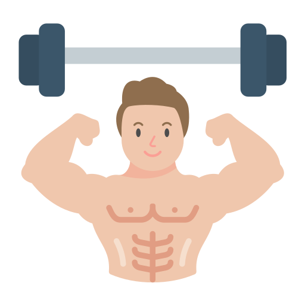
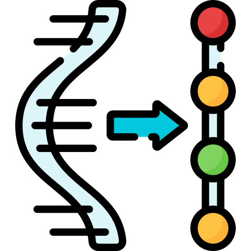

1. Mejora la Concentración y el Rendimiento Cognitivo
La cafeína, el principal compuesto activo del café, estimula el sistema nervioso central. Esto puede mejorar la concentración, el enfoque y el rendimiento cognitivo. La cafeína bloquea la adenosina, un neurotransmisor que promueve el sueño, lo que resulta en una mayor vigilia y alerta mental.
2. Aumenta la Energía Física
Consumir café puede aumentar los niveles de energía física al liberar ácidos grasos almacenados en el cuerpo, lo que proporciona un impulso de energía. Esto puede ser especialmente beneficioso antes de realizar ejercicio, ya que puede mejorar el rendimiento físico y la resistencia.
3. Fuente Rica de Antioxidantes
El café es una fuente importante de antioxidantes, que son compuestos que combaten el daño celular causado por los radicales libres. Los antioxidantes pueden ayudar a reducir el riesgo de enfermedades crónicas, como diabetes tipo 2, enfermedades cardíacas y ciertos tipos de cáncer.
4. Mejora el Estado de Ánimo
El café puede tener efectos positivos en el estado de ánimo, ayudando a reducir la depresión y la ansiedad. La cafeína aumenta la liberación de neurotransmisores como la dopamina y la serotonina, que pueden mejorar el estado de ánimo y la sensación de bienestar.
5. Apoya la Salud Digestiva
El café puede estimular el tránsito intestinal, ayudando a prevenir el estreñimiento y promoviendo una digestión saludable. La cafeína puede aumentar la producción de ácido gástrico y la motilidad intestinal, lo que puede ayudar a mantener el sistema digestivo en buen estado.